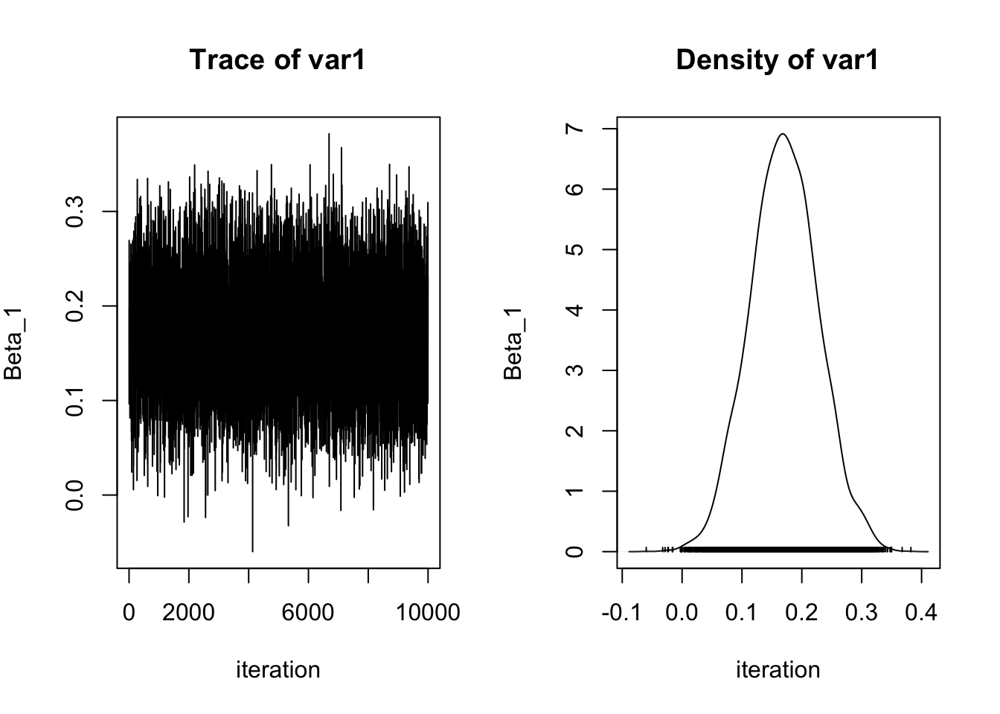
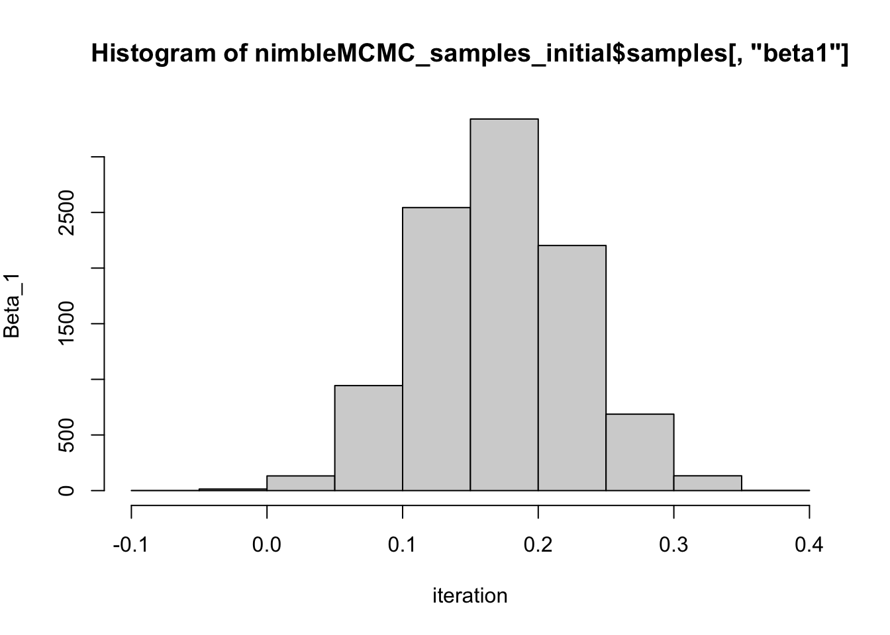

── Conflicts ────────────────────────────────────────── tidyverse_conflicts() ──
✖ dplyr::filter() masks stats::filter()
✖ dplyr::lag() masks stats::lag()
ℹ Use the conflicted package (<http://conflicted.r-lib.org/>) to force all conflicts to become errors
library(nimble)
nimble version 1.0.1 is loaded.
For more information on NIMBLE and a User Manual,
please visit https://R-nimble.org.
Note for advanced users who have written their own MCMC samplers:
As of version 0.13.0, NIMBLE's protocol for handling posterior
predictive nodes has changed in a way that could affect user-defined
samplers in some situations. Please see Section 15.5.1 of the User Manual.
Attaching package: 'nimble'
The following object is masked from 'package:stats':
simulate
library(bayesplot)
This is bayesplot version 1.10.0
- Online documentation and vignettes at mc-stan.org/bayesplot
- bayesplot theme set to bayesplot::theme_default()
* Does _not_ affect other ggplot2 plots
* See ?bayesplot_theme_set for details on theme setting
library(posterior)
This is posterior version 1.4.1
Attaching package: 'posterior'
The following object is masked from 'package:bayesplot':
rhat
The following objects are masked from 'package:stats':
mad, sd, var
The following objects are masked from 'package:base':
%in%, match
Goal of this computing lab session
This lab will involve taking some concepts from the lectures and introduce you to the way NIMBLE works.
Introduction to NIMBLE format.
NIMBLE is written in a slightly unusual format if you’re used to just using R. It is written in the style of a program called BUGS, which came out a few decades ago and was developed at Imperial College London.
First basic examples of NIMBLE and how to use it.
These examples will be for basic regression modesl using linear predictors
Adapted from https://r-nimble.org/examples
Normal-Normal example.
The first example will utilize a simple regression
First create some example data for our model:
\[
y = max + c
\]
set.seed(1)p <-3# number of explanatory variablesn <-100# number of observationsX <-matrix(round(rnorm(p*n),2), nrow = n, ncol = p) # explanatory variablestrue_betas <-c(c(0.2, 0.5, 0.3)) # coefficientssigma <-0.5y <-rnorm(n, X %*% true_betas, sigma)
The following code will establish which samples will be used in the sampling of the posteriors. If there is a conjugate relationship apparent between prior and posterior (e.g., Normal-Normal, Binomial-Beta, Poisson-Gamma), it will be detected here
model <-nimbleModel(code, constants = constants, data = data, inits = inits)
Defining model
Building model
Setting data and initial values
Running calculate on model
[Note] Any error reports that follow may simply reflect missing values in model variables.
Running calculate on model
[Note] Any error reports that follow may simply reflect missing values in model variables.
Checking model sizes and dimensions
Checking model calculations
Compiling
[Note] This may take a minute.
[Note] Use 'showCompilerOutput = TRUE' to see C++ compilation details.
running chain 1...
|-------------|-------------|-------------|-------------|
|-------------------------------------------------------|
[Warning] There are 2 individual pWAIC values that are greater than 0.4. This may indicate that the WAIC estimate is unstable (Vehtari et al., 2017), at least in cases without grouping of data nodes or multivariate data nodes.
t1 =Sys.time()t1 - t0
Time difference of 10.36599 secs
What is the summary of each estimated parameter from the samples?
What do the samples of one of the unknown parameters actually look like? Let’s have a look at beta1 (which we know is 0.2)
plot(nimbleMCMC_samples_initial$samples[ , 'beta1'], type ='l', xlab ='iteration', ylab =expression(Beta_1))

Let’s have a look at beta1 another way via a histogram of samples (which we know is 0.2)
hist(nimbleMCMC_samples_initial$samples[ , 'beta1'], type ='l', xlab ='iteration', ylab =expression(Beta_1))
Warning in plot.window(xlim, ylim, "", ...): graphical parameter "type" is
obsolete
Warning in title(main = main, sub = sub, xlab = xlab, ylab = ylab, ...):
graphical parameter "type" is obsolete
Warning in axis(1, ...): graphical parameter "type" is obsolete
Warning in axis(2, at = yt, ...): graphical parameter "type" is obsolete

So it looks like the samples are converging quickly from the initial parameter to ~0.2. But typically we will throw some samples at the beginning to ensure that the transient samples (which is when the model samples haven’t stabilized around a particular value) are not included in calculating estimates of the mean and credible intervals. This is called the ‘burn in’ or ‘warm up period’.
Let’s do it again but with a burn in of 1000 samples.
What is the summary of each estimated parameter from the samples when monitoring difference between beta1 and beta2?
nimbleMCMC_samples_diff_betas$summary
Mean Median St.Dev. 95%CI_low 95%CI_upp
beta12_diff 0.303035 0.303307 0.07808223 0.148414 0.454058
Logistic regression example.
First create some example data for our model:
\[
y = max + c
\]
n =10000p =3set.seed(1)x1 =round(rnorm(n),2)x2 =round(rnorm(n),2)x3 =round(rnorm(n),2)z =1+2*x1 +3*x2 -5*x3 # linear combination with a biaspr =1/(1+exp(-z)) # pass through an inv-logit functiony =rbinom(n,1,pr) # bernoulli response variable
What does equivalent frequentist model output look like for reference? What’s the interpretation of the 95% CI?
#now feed it to glm:df =data.frame(y=y,x1=x1,x2=x2,x3=x3)model_freq =glm(y~x1+x2+x3,data=df,family="binomial")central_est =t(t(model_freq$coefficients))conf_int =confint(model_freq)
The following code will establish which samples will be used in the sampling of the posteriors. If there is a conjugate relationship apparent between prior and posterior (e.g., Normal-Normal, Binomial-Beta, Poisson-Gamma), it will be detected here
What does equivalent frequentist model output look like for reference? What’s the interpretation of the 95% CI?
#now feed it to glm:df =data.frame(y=y,x1=x1,x2=x2,x3=x3)model_freq =glm(y~x1+x2+x3,data=df,family="poisson")central_est =t(t(model_freq$coefficients))conf_int =confint(model_freq)
The following code will establish which samples will be used in the sampling of the posteriors. If there is a conjugate relationship apparent between prior and posterior (e.g., Normal-Normal, Binomial-Beta, Poisson-Gamma), it will be detected here